Bazaes una ciudad con mucha historia conocida por su descubrimiento arqueológico tan importante como lo es la dama de Baza. Este yacimiento es de la época ibera y data del siglo IV antes de cristo.
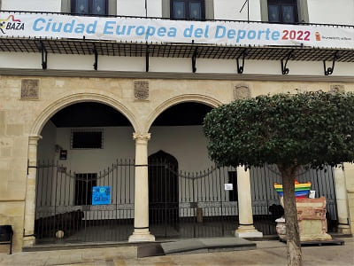
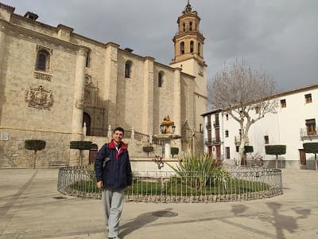
En mi visita primeramente fui a la plaza mayor donde pude ver la colegiata y el ayuntamiento. Una plaza en la que la concatedral destaca sobre todo lo anterior.
La Colegiata de Nuestra Señora Santa María de la Encarnación, Concatedral de Baza o Iglesia Mayor es de estilo renacentista, fue edificado en el siglo XVI y se construyó sobre los restos de la mezquita aljama musulmana. Inicialmente, se abrió al culto cristiano tras su sacralización manteniendo su estructura como mezquita. En ella sobresalen dos grandes escudos, sobre la columna y las puertas que le dan cierto aire medieval. Por dentro es de estilo gótico con arcos de crucería pero no poseen retablos importantes.
Dentro de la ciudad esta el museo de arqueología que se encuentra en el antiguo ayuntamiento, de estilo renacentista. En el tiene muchos restos de yacimientos íberos de la zona, así como romanos y árabes. Lo más importante es lo relacionado con la dama de Baza para el cual además existe un centro de interpretación de donde se extrajo en las afueras de la ciudad (la antigua ciudad de Basti). Recordar que es una réplica ya que la original se encuentra en el museo arqueológico de Madrid. También tenemos la sala real con todo lo relacionado con el título de ciudad que ganarían en el reinado de los Reyes Católicos. Esta tiene un artesonado mudéjar muy lograda.
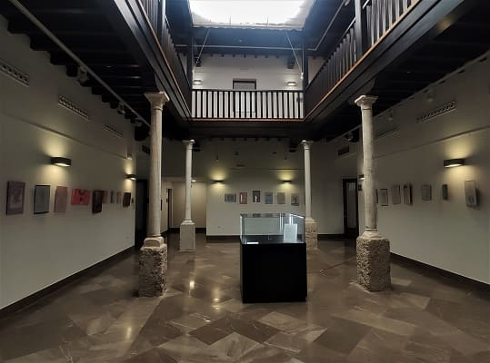
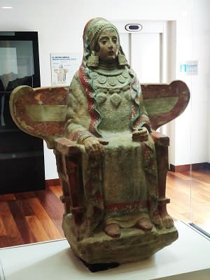
 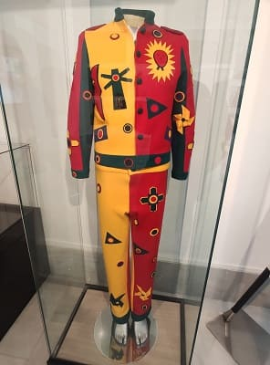
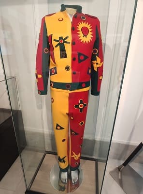
Otros edificios interesantes son la fuente de los caños dorados, que es una antigua fuente realizada en tiempos de Felipe III con su escudo real, los baños árabes que han sido restaurados recientemente y se encuentran intactos y completos. Junto con los baños de Jaén y Granada, son los mejor conservados de toda Andalucía. Esto es debido a que estaban enterrados debajo de la antigua calle.
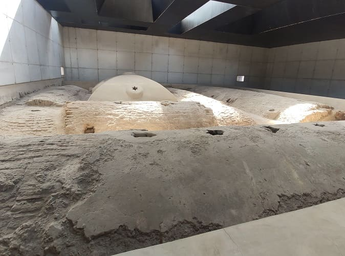
Como arquitectura religiosa además de la colegiata esta la iglesia de San Juan con un artesonado mudéjar que se ve en la siguiente imagen. Data del siglo XVI y que responde a patrones y caracteres propios de las construcciones mudéjares.
Construida sobre la mezquita que se levantaba en este mismo lugar, en el arrabal de Argedid, junto a la Puerta de Armesto, fue erigida parroquia en el año 1505 en este barrio donde el noventa por ciento del vecindario era morisco.
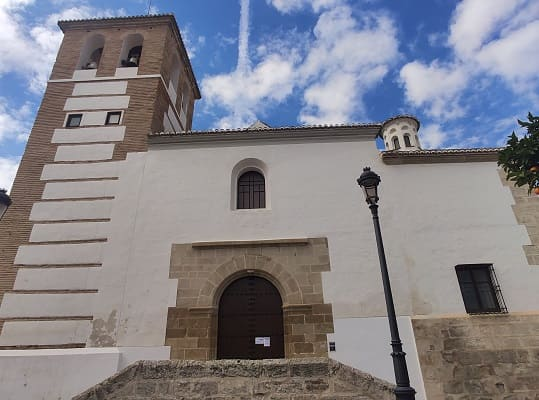

También destaca el camarin de la iglesia de los Dolores que esta sin restaurar que se ve en la siguiente imagen y cobra bastante riesgo de dañarse. Es una auténtica joya por encima de la iglesia que no esta abierta al público. Otro edificio que esta en plena restauración es el monasterio de San Jerónimo que también muestro en la imagen.
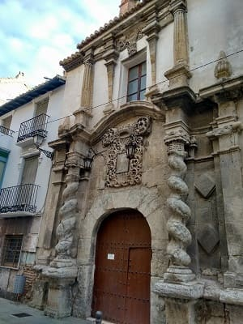
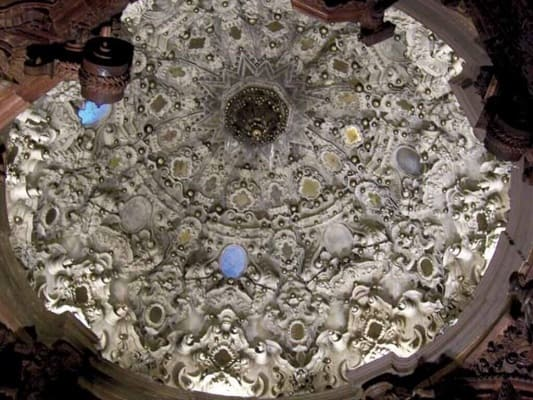
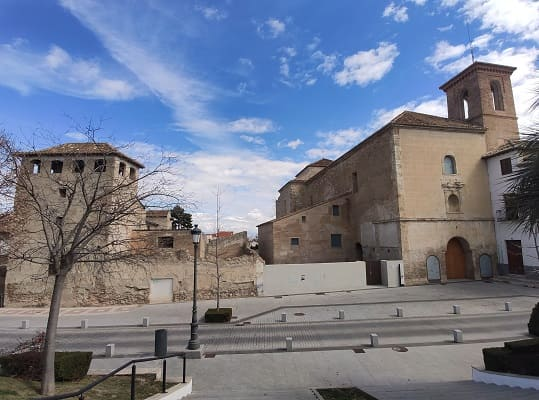
Después de Baza fui al yacimiento de la dama de Baza. La ciudad iberorromana de Basti: apenas a tres kilómetros de la Baza actual se encuentra cerro Cepero, el emplazamiento de la ciudad iberorromana de Basti. Esta fue una de las principales ciudades fortificadas ibéricas de todo el país, hasta el punto de darle nombre a una extensa región, la Bastetania. En ella se encontró en 1971 la conocidísima Dama de Baza, uno de los mejores ejemplos de la estatuaria funeraria ibérica y arte íbero. Después tiraría hacia la provincia de Almería.
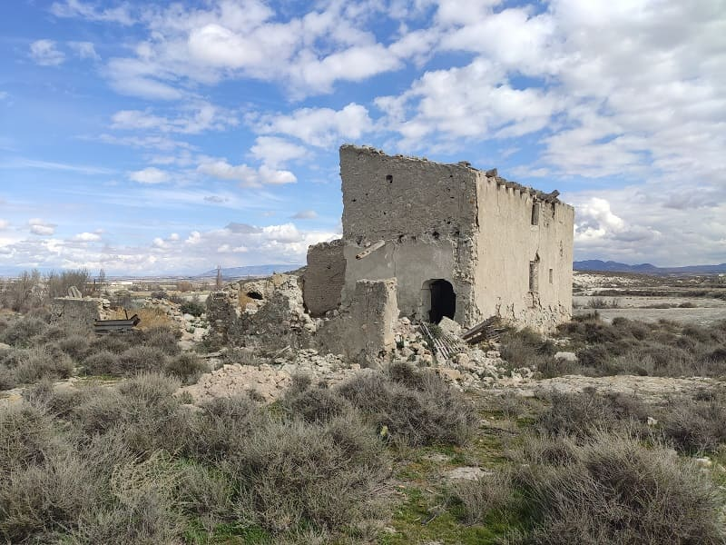
El primer pueblo de Almería que vi fue Vélez Rubio. Este pueblo tiene como reclamo más importante una gran iglesia, la de la encarnación que tiene en su portada dos grandes escudos. Los escudos más grandes que he visto en una iglesia de este tipo. Además la iglesia es enorme y lleva un retablo barroco bastante elegante. El resto de la iglesia es bastante sobrio. Unos kilómetros más lejos esta su pueblo menor, Vélez Blanco que pese a ser más pequeño tiene mucho mas patrimonio y más encanto para ser visitado. El crecimiento de Vélez Rubio se debe a conectar con la carretera que une la zona central Andalucía con el levante.
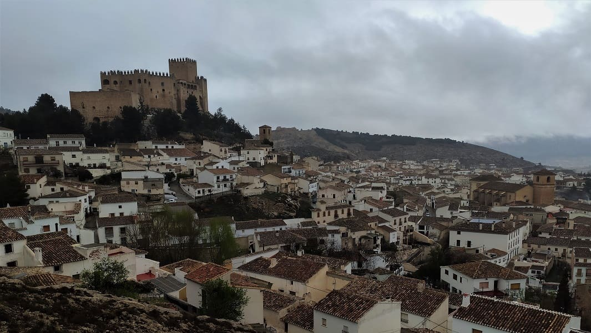
Vélez Blanco, es un pueblo que debió de ser importante en la época califal, donde había en lo más alto una mezquita y una alcazaba que defendía el pueblo. Lo que quedaba de la fortaleza árabe pasaría por distintas manos tras la reconquista hasta llegar a los Vélez, una familia dominante en toda Andalucía a partir del reinado de Felipe II. Esta construiría un castillo, el castillo de los Velez y haría grandes cambios y reformas con el paso de los años llegando a realizar un palacio en su interior con muchas figuras de mármol y ventanas con todo tipo de detalles, así como gárgolas o escudos.
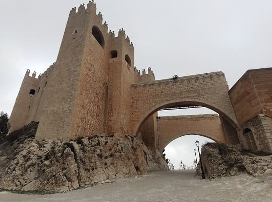
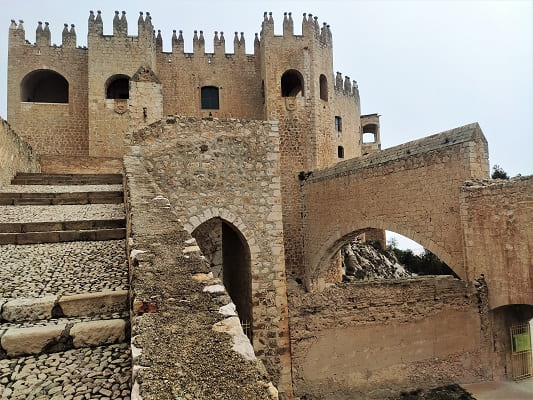
Destaca el gran balcón por el cual puedes observar todo lo que acontece en el pueblo ya que el castillo esta a bastante altura del nivel más bajo del pueblo. El patio del castillo en el siglo XIX sería vendido al museo metropolitano de Nueva York y el palacio quedaría abandonado.
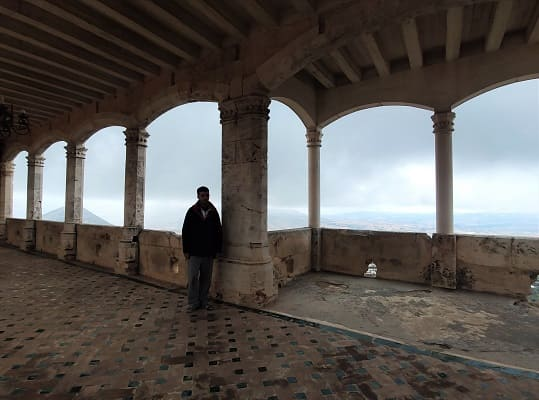
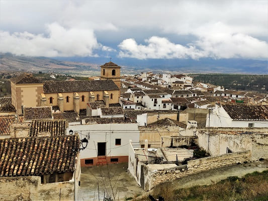
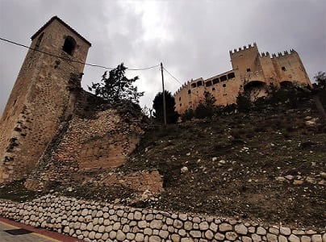
La junta de Andalucía lo compraría y desde entonces ha recibido varias reformas. La última se a asegurado su acceso y se han puesto diferentes paneles con la historia del castillo así como cerrado y aislado bien diferentes salas. Actualmente esta en proceso de una última reforma para conseguir un aspecto muy parecido al que tenía, haciendo réplicas del patio original del que se encuentra en Nueva York.
En el pueblo a parte del castillo hay una iglesia en ruinas, la iglesia de Santa María Magdalena, que es supuesto que antes de ella estaba la mezquita de la alcazaba y una iglesia grande cerca de la calle Mayor y el ayuntamiento. Además cuenta con un convento, el de San Luis, que data de primeros del siglo XVII que tiene una portada bastante elaborada con escudos de la familia del marques de Requenses que es quien lo mando construir.
Antes de llegar a mi destino y debido a la proximidad de Cuevas de Almanzora con la ciudad de Lorca decidiría parar allí.

Lorca pertenece a la provincia de Murcia con lo que habría recorrido ya en este viaje 8 provincias, sin haber pisado Huelva ni Jaen de Andalucía. Realmente donde más he enfocado el viaje es en Córdoba, Málaga y Almería, si bien he conocido muchos pueblos de Sevilla y Granada importantes que no había visitado nunca.
Como en Lorca no conseguí aparcar por el centro ya que hay muchos coches, y casi todos los aparcamientos son de pago subí directo al castillo. Este castillo esta realizado sobre la antigua alcazaba árabe. Dentro del basto área de sus murallas existía una mezquita y una sinagoga ya que muchos judíos habitaban estas tierras. Hoy en día ahí se encuentra el parador nacional de Lorca, un edificio moderno con todas las comodidades aislado de ruidos y del transitar urbano.
Al ver el castillo por fuera, ya que llegue sobre las 18 horas que es cuando cierra, recorres la muralla y ves desde arriba el tamaño del casco antiguo de Lorca comparado con toda la zona nueva. Han realizado multitud de edificios modernos de varias plantas sobre la calle principal, la nacional N-340, sin embargo estos edificios no se extienden más allá de esa calle desde la cual parece como si estuvieras en una ciudad mucho mayor. Esa calle alberga principales tiendas y marcas importantes. En el centro empece por visitar la colegiata, un edificio enorme que alberga grandes pinturas en su interior.
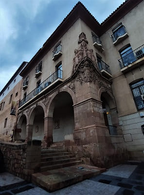
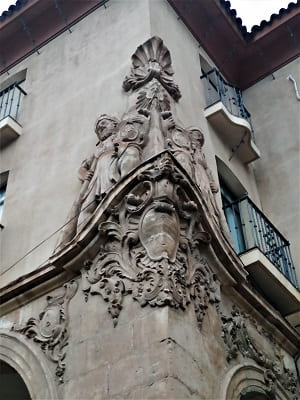
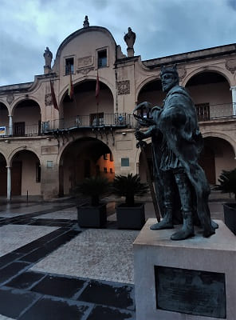
Muy cerca destaca la Casa del Corregidor, con un escudo lateral muy imponente de la misma calidad a los que se encuentran en palacios de Extremadura, del siglo XVI, y la casa del artesano con el escudo de Carlos V en su fachada. El ayuntamiento junto a la colegiata y la plaza Mayor no deja indiferente, de estilo renacentista con grandes escudos de reinado borbon de primeros del siglo XVIII.
La colegiata de san Patricio es un edificio de estilo renacentista y comenzó a construirse en 1533. El esquema arquitectónico es muy similar a la de la catedral de Murcia ya que el autor es el mismo, Jerónimo Quijano. Su trazado interior lleva tres naves siendo más amplia la central, capillas laterales entre los contrafuertes y capillas radiales en la girola, así como torre-campanario en la girola que aloja la Sacristía, y elevado crucero. En la siguiente imagen la fotografía de esa noche de febrero.
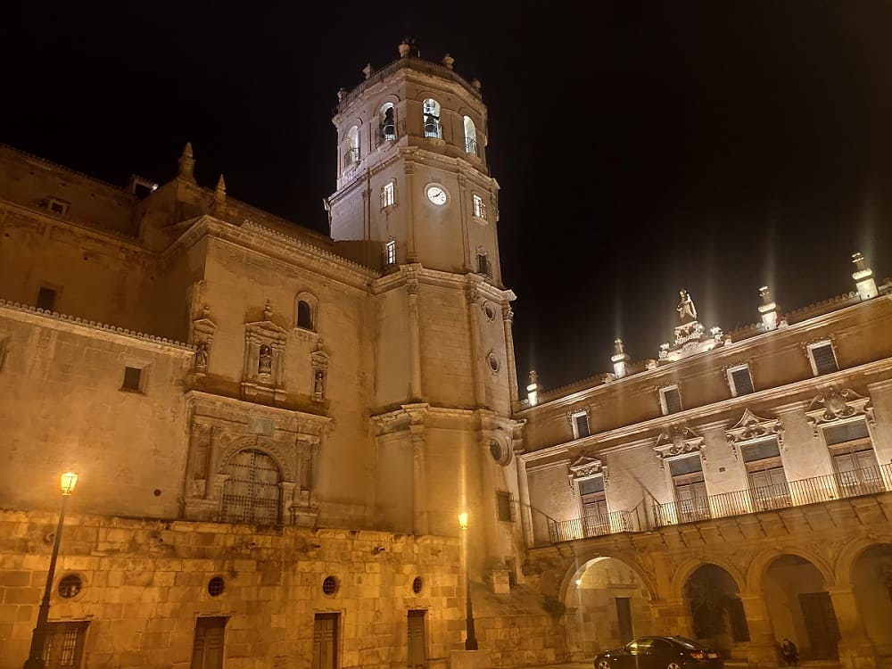
Ya paseando por sus calles vería uno de los mejores palacios de la arquitectura castellana del siglo XVI, el Palacio de Guevara. En su interior podemos encontrar la reproducción de la antigua biblioteca y farmacia o botica, así como grandes pinturas en la escalinata.
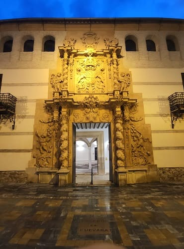
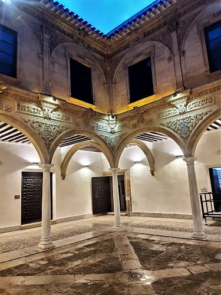
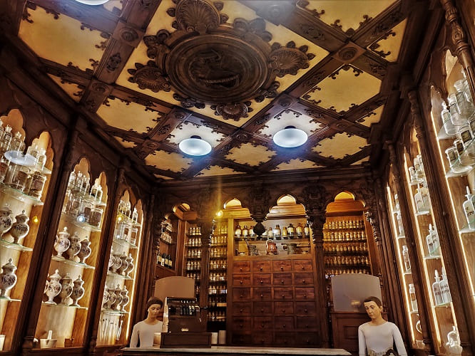
Otro palacio de interés es el Palacio de Ruano, de finales del siglo XIX, de estilo más clásico que destaca por sus escaleras imperiales y su sala de reuniones de estilo neonazarí en alusión a la arquitectura del palacio de la Alhambra en Granada.
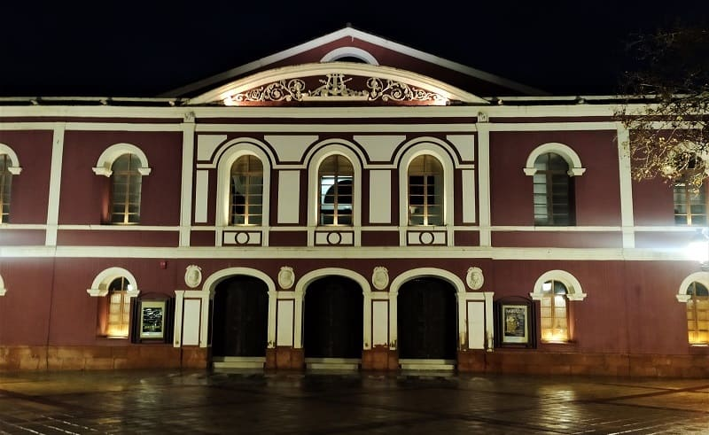
También destaca el teatro Guerra de mediados del siglo XIX. Su interior esta decorado con diferentes pinturas de esa época que le da un aire veneciano.
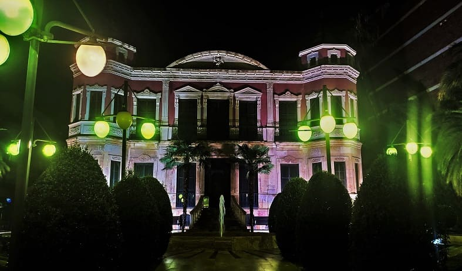
Edificios religiosos a parte de la colegiata encontramos la iglesia de san Pedro, la de san Mateo, la de san Francisco y la iglesia de Santiago. Estas iglesias se caracterizan por torres altas y por retablos barrocos. La de proporciones más grandes la de San Mateo seguida de la de san Francisco. En el terremoto de Lorca de Mayo de 2011 varias de las torres quedarían dañadas. En el edificio anexo hay un patio con una reproducción de la cueva de Lourdes con la Virgen.
De noche me alojaría en el hostal Perejil, muy cercano a Cuevas de Almanzora y Águilas.

© 2016 - All Rights Reserved - Diseñada por Sergio López Martínez
El sitio se mantiene gracias a la publicidad, por favor Desactiva Adblock para seguir navegando
He desactivado Adblock![[Valid RSS]](https://www.onepointsync.com/wp-content/uploads/2016/08/valid-rss-rogers.png "Validate my RSS feed")